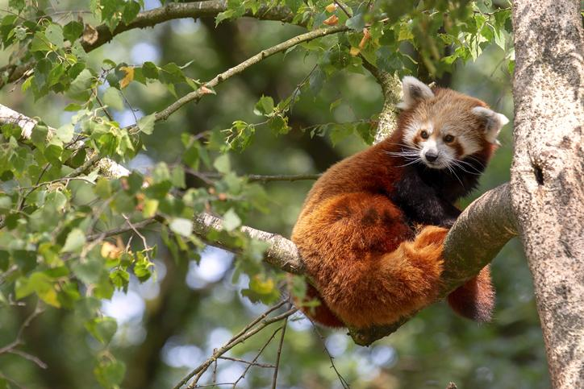
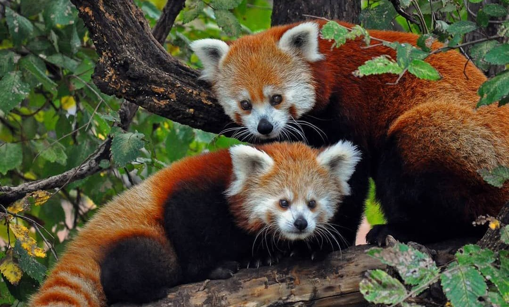
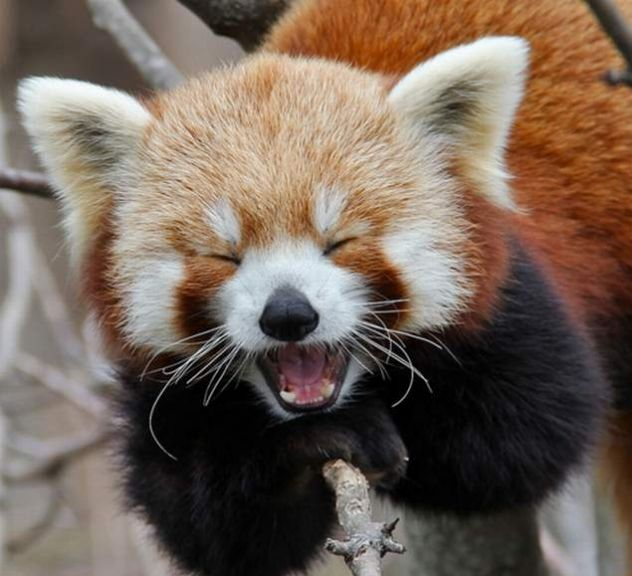

DETALLES

Hábitat y distribución
Los pandas rojos son nativos del Sureste de Asia; Himalaya, el sur del Tíbet, Bután, el noreste de India, de la provincia de Yunnan y las montañas Hengduan de la provincia de Sichuan en China. Se cree que la última zona ha sido un refugio de pandas rojos, así como muchos otros animales, en el último período (Pleistoceno), durante la época glacial. La garganta del río Brahmaputra, como hace un bucle en todo el extremo oriental de la cordillera del Himalaya, se considera una división natural entre las dos subespecies.
Los pandas rojos viven en climas de temperatura moderada (10-25 °C), con pocos cambios anuales en las zonas boscosas; prefieren las zonas montañosas de 1800-4800 m s. n. m., especialmente los bosques templados de coníferas con viejos árboles de rododendro y, por supuesto, bambú. Comparten el hábitat con otro especialista en bambú, el panda gigante en China (Reserva de Wolong). Los pandas rojos habitan en viejos árboles huecos. A menudo se pasan el día tumbados en las ramas altas de los árboles; se alimentan más activamente por la mañana y por la noche. También hay varias poblaciones de panda rojo que viven en cautividad en zoológicos de todo el mundo. La población cautiva de América del Norte se mantiene en el marco del Plan de Supervivencia de las Especies (SSP), y contiene 182 animales desde octubre de 2001.
Características
Miden de 30 a 60 cm. Los machos pesan de 4,5 a 6,2 kilogramos, las hembras de 3 a 4,5 kg. Tienen el pelaje de color marrón rojizo, largo y suave en la parte superior, que se vuelve oscuro en la parte inferior. En el rostro tiene manchas de color blanco similares a las de un mapache, pero cada individuo tiene diferentes marcas faciales. Su cabeza es redondeada con orejas rectas de mediano tamaño, nariz negra, y los ojos muy oscuros, casi negros. Su cola, larga y felpuda con seis anillos de color ocre o rojo, le proporciona un equilibrio y una excelente habilidad sobre los resbaladizos musgos y líquenes que cubren los árboles. Las patas son cortas y de color negro. También tiene garras retráctiles y, como el panda gigante, un "falso pulgar", que es en realidad una extensión de los huesos de la muñeca. Posee un pelaje grueso en la planta de los pies que ofrecen protección contra el frío y oculta los genitales.
Reproducción
En su hábitat natural, los pandas rojos superponen sus territorios, pero solo se unen cuando es la época de apareamiento. Alcanzan la madurez sexual alrededor de los 18 meses y las hembras pueden tener su primera cría a los dos años. La reproducción ocurre en invierno, específicamente entre los meses de enero y marzo, de manera que las crías nacen en primavera y verano.
El panda rojo busca una pareja con la que copular y tanto el macho como la hembra pueden aparearse con distintos ejemplares a fin de garantizar la cópula y la consiguiente gestación. Una de las curiosidades del panda rojo es que la cópula suele ocurrir en el suelo, no en los árboles, lugar donde pasan la mayor parte de su vida. Como decíamos, este es el único periodo en el que el panda rojo se relaciona con otros de su misma especie.
Una vez producido el apareamiento, la hembra inicia el periodo de gestación, que suele durar de 112 a 158 días. Como sucede en todas las especies animales, la futura madre construye un nido para dar a luz y resguardar a sus pequeños hasta que se independicen. Las hembras organizan nidos con ramas y hojas en los huecos de troncos o grietas de rocas, en los cuales tendrán a su descendencia.
Estado de conservación
Según diversos estudios que se han ido haciendo a lo largo de las dos últimas décadas, los pandas rojos están en peligro de extinción desde la década de los 90. De hecho, se siguen realizando estudios y actualmente se han registrado alrededor de unos 2.500 individuos adultos maduros en libertad, una cifra bastante baja aunque, por supuesto, existen más ejemplares en cautividad. Concretamente, en las provincias de Gansu, Qingahi, Shaanxi y Guizhou ya se habían extinguido. Hoy en día el impacto negativo sobre esta especie es aún mayor y su situación ha empeorado hasta el punto de que el ser humano ha deforestado más del 50% del hábitat del panda rojo, es decir se da destrucción del hábitat de estos animales, y también está la caza para capturarlo vivo y venderlo a zoológicos y como animal de compañía, algo ilegal en diversos países del mundo. Hay quien se pregunta cuál es el precio del panda rojo porque busca comprar este animal para tenerlo de mascota, algo que es un gran error, ya que necesita vivir en libertad para prosperar.
La organización de IUCN Red List of Threatened Species[1] indica que esta especie en el año 2015 se consideró en estado de en peligro de extinción. Sobre el año 2008 había comenzado a recuperarse dejando atrás el estado de peligro, pero también estimó que la tendencia de la población era decreciente, perdiendo volumen año tras año. Finalmente, con información actualizada en el 2015 se vio que este pequeño mamífero ha vuelto al estado de peligro.
Habitos alimenticios
| N° | Alimentos | Descripción |
|---|---|---|
| 1 | Bambú | Solo se come los brotes y las puntas de las hojas del bambú, esta es una diferencia con el panda gigante que se alimenta de todas las partes del bambú. |
| 2 | Insectos | Es capaz de capturar insectos, gusanos e incluso pequeños vertebrados. |
| 3 | Carne | Aunque su dieta el mayoritariamente vegetariana, tambien puede comer carne, usualmente lo hacen en cautiverio |
| 4 | Frutas | comen Frutas, bellotas, raíces, bayas |
| 5 | Huevos | complementan su dieta con crías de ave, huevos y en ocaciones pequeños roedores |

10 Curiosidades del panda rojo
- Son animales tímidos y solitarios salvo en época de apareamiento.
- Su nombre científico es Ailurus fulgens.
- Estudios científicos recientes han demostrado que no tiene relación directa con el panda y le han otorgado una familia propia: Ailuridae.
- Las hembras dan a luz entre 1 y 4 crías en primavera y verano.
- Los machos nunca se interesan por sus crías, son las hembras las que asumen la crianza de sus pequeños durante 90 días.
- Cuando se siente amenazado o en peligro y no consigue escapar, se pone de pie sobre sus patas traseras e intimida a los agresores pareciendo más grande.
- Digiere mejor los troncos de bambú según la estación del año. Es decir, tiene una mayor digestibilidad en verano y otoño, mientras que es menor en primavera e invierno.
- El tercer sábado de septiembre se celebra el Día Internacional del Panda Rojo, con la finalidad de crear conciencia a nivel mundial de la importancia de cuidar y proteger esta especie animal.
- La forma más fácil de distinguirlos de los mapaches o los perros mapaches son sus patas negras.
- Es amigable y adorable, pero atacará si se ve amenazado.